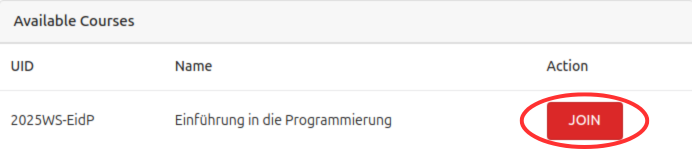
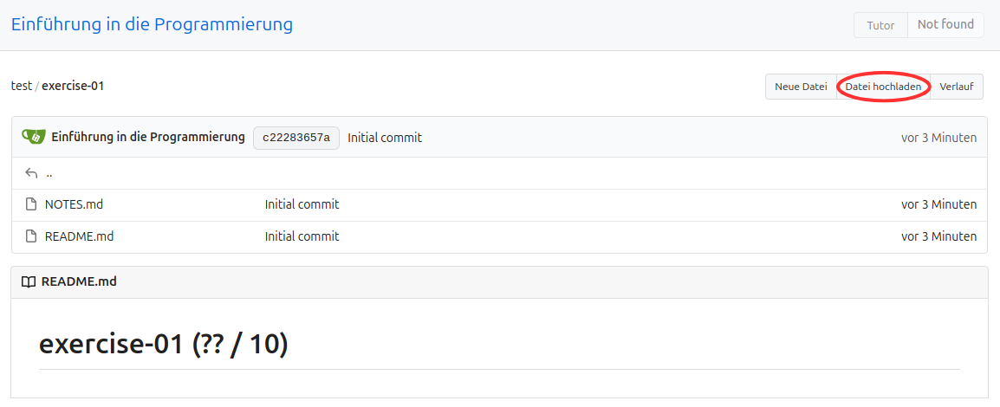
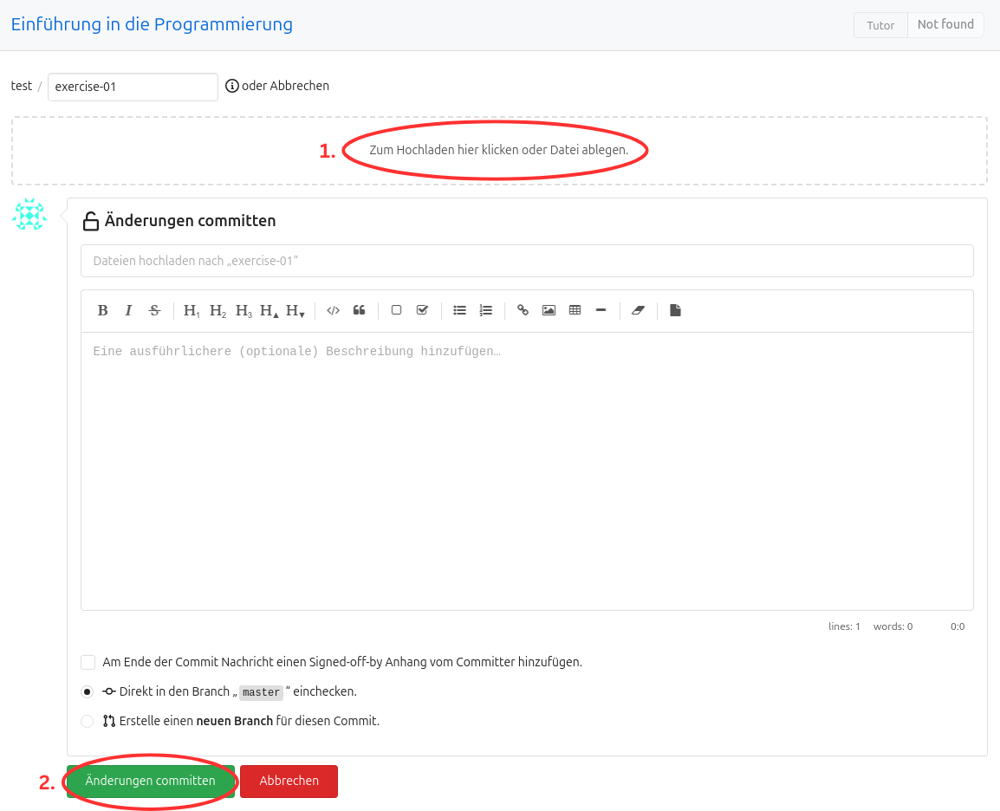

Abgabesystem für Einführung in die Programmierung
1. Kurs beitreten
-
Öffnen Sie die Website des Abgabesystems.
-
Klicken Sie oben rechts auf Anmelden.
-
Melden Sie sich mit Ihrem Uni-Account (wie bei HisInOne – RZ-Account) an.
-
Treten Sie dem Kurs 2025WS-EidP Einführung in die Programmierung bei, indem Sie auf das rote Join klicken.

2. Abgabe
Sie können Ihre Lösungen auf zwei Arten einreichen:
– Entweder direkt über die Website
– Oder (empfohlen) über Git
Über die Website abgeben
-
Öffnen Sie die Website des Abgabesystems.
-
Klicken Sie oben rechts auf Anmelden.
-
Melden Sie sich mit Ihrem Uni-Account an.
-
Öffnen Sie den Kurs 2025WS-EidP Einführung in die Programmierung.
-
Navigieren Sie zu dem Ordner, in dem Sie Ihre Lösung abgeben möchten.

-
Klicken Sie oben rechts auf Datei hochladen.
 -
Ziehen Sie Ihre Dateien per Drag-and-Drop in das Feld 1., oder klicken Sie es an und wählen die gewünschten Dateien aus. Klicken Sie anschließend unten links auf 2., um die Dateien abzugeben.
 -
Sie sollten Ihre abgegebenen Dateien nun in der Übersicht sehen.
Achten Sie darauf, dass rechts hinter der Commit-Nachricht ein grüner Haken erscheint. Weitere Infos dazu unter Build Server.
Über Git abgeben
Die Abgabe via Git erfordert ein einmaliges Setup, ermöglicht aber anschließend eine komfortable Abgabe direkt aus VS Code.
üõ†Ô∏è Git einmalig einrichten
-
Öffnen Sie Visual Studio Code (VSC).
-
Öffnen Sie ein Terminal in VSC (
Ctrl + Shift + `oder überTerminal → New Terminal). -
Installieren Sie Git und SSH mit:
sudo apt install git ssh -y -
Erzeugen Sie ein SSH-Schlüsselpaar:
ssh-keygen -
Drücken Sie einfach Enter, um die Standardpfade zu verwenden.
Der Schlüssel wird unter~/.ssh/id_rsaund~/.ssh/id_rsa.pubgespeichert. -
Zeigen Sie Ihren öffentlichen Schlüssel an:
cat ~/.ssh/id_rsa.pubDie Ausgabe sieht etwa so aus:
ssh-rsa AAAAB3NzMC+iS[...]wBlhd3n9VPCG0p= user@systemKopieren Sie den gesamten Text (die Shortcuts können sich nach Betriebsystem unterscheiden,
Rechtsklick -> Copygeht aber immer ;) ). -
Öffnen Sie das Abgabesystem, melden Sie sich an und öffnen Sie den Kurs 2025WS-EidP Einführung in die Programmierung.
-
Klicken Sie oben rechts auf das Profilbild → Einstellungen.

-
Navigieren Sie zum Reiter Keys → Klicken Sie bei SSH-Schlüssel verwalten auf Schlüssel hinzufügen.
Geben Sie bei Name eine Bezeichnung ein, und fügen Sie den kopierten Schlüssel unter Inhalt ein.
Klicken Sie anschließend auf Schlüssel hinzufügen.
-
Gehen Sie zurück zum Repository (über Home → Kurs öffnen).
-
Kopieren Sie den SSH-Link des Repositories über den Copy-Button.

-
Zurück in VSC: Navigieren Sie im Terminal zu einem Ordner, in dem Sie das Repository speichern möchten.
Wichtige Terminalbefehle:
ls→ listet Inhalte im aktuellen Verzeichniscd dirXYZ→ wechselt in das VerzeichnisdirXYZcd ..→ geht ein Verzeichnis nach oben
-
Klonen Sie Ihr Repository (ersetzen Sie
<ssh-url>durch die kopierte URL):git clone <ssh-url>Danach sollte ein neues Verzeichnis mit Ihrem Kürzel erscheinen – das ist Ihr lokales Repository.
-
Konfigurieren Sie Git mit Ihrem Namen und Ihrer E-Mail-Adresse:
git config user.name "Ihr Name" git config user.email "your@mail.com" git config pull.rebase true
üîÑ Workflow mit Git
Alle folgenden Befehle führen Sie im Terminal im Verzeichnis Ihres Repos aus:
-
Lokalen Stand aktualisieren
git statusFalls Änderungen vorhanden sind, zuerst committen:
git add <dateiname> git commit -m "Nachricht"Danach:
git pull -
Änderungen hochladen
git add <dateiname> git commit -m "Nachricht" git pull git push
ü߆ Merkhilfe: Git-Workflow
git pull
# ... Dateien verändern ...
git add <dateien>
git commit -m "Nachricht"
git pull
git push
Build Server
Nachdem Sie Ihre Lösung hochgeladen haben, überprüft der Build-Server automatisch, ob Ihr Code den vorgegebenen Stilrichtlinien (z. B. flake8) entspricht und ob Sie in der Datei NOTES.md Ihre aufgewendete Zeit eingetragen haben.
War der Build erfolgreich, erscheint ein grüner Haken neben Ihrer Commit-Nachricht auf der Abgabeplattform. Bei einem fehlgeschlagenen Build wird stattdessen ein roter Haken angezeigt. Durch einen Klick darauf erhalten Sie eine detaillierte Fehlermeldung.
Der Build-Check muss erfolgreich abgeschlossen werden – Abgaben, die diesen Schritt nicht bestehen, werden mit 0 Punkten bewertet.
Sie können Ihre Dateien beliebig oft hochladen. Bewertet wird stets der Stand zum Zeitpunkt der Deadline. So können Sie also ohne Probleme Ihre Dateien abgeben und nachschauen ob der Build durchlief, falls nicht, können Sie anhand der Fehlermeldungen korrigieren und erneut hochzuladen.